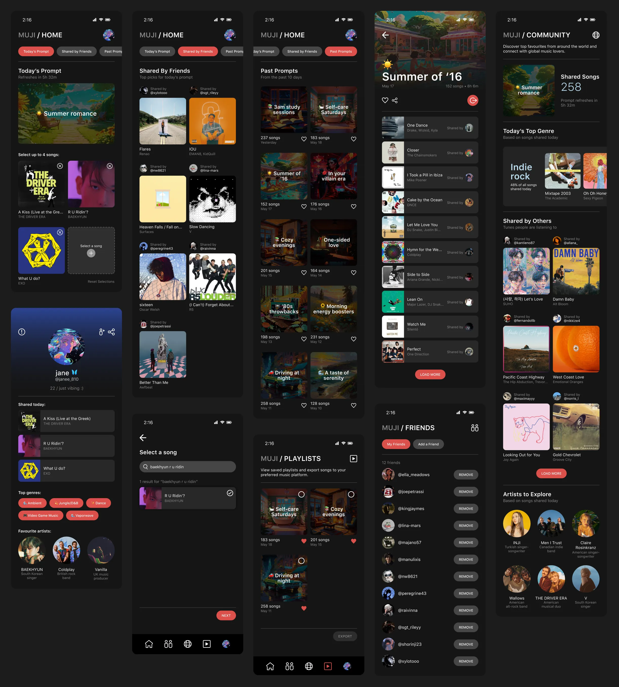

MUJI*
Role: ead researcher & designer
Year: 2023
Tools: Figma
THE CHALLENGE
How can we encourage people to share music in a collaborative way?
As part of my journey to explore UX design in mobile apps, I was inspired to create a concept that would combine music with the simplicity of BeReal. The French photo-sharing app gained traction throughout the COVID-19 pandemic for the authenticity in its goal to remove the "fakeness" of social media and share in-the-moment snapshots of daily life. I was passionate about seeing how this approach could extend to music, and how users could be encouraged to contribute to something that didn't rely on algorithms or curated profiles.
MARKET RESEARCH
Breaking down BeReal.
Given BeReal was a highly influential part of developing Muji’s concept, I wanted to understand what drew users to it as opposed to other social media apps. I started by analyzing its functionality as a photo-sharing platform; based on reviews from users, I identified four key issues:
After an extended period of time, many users found BeReal to be too repetitive and boring. They felt the moments being shared from their lives were "too mundane" compared to others.
The removal of the Discovery feature isolated users from the rest of the world. They no longer felt connected to others when they couldn't see what was being shared.
The removal of the Memories feature prevented users from accessing past moments shared with friends/family. Unless the photos were saved to the device's local storage, they couldn't be recovered.
The app itself is not optimized for mobile devices and users experienced several technical issues. Frequent problems with notifications, camera access and in-app functions were reported.
Although some of these issues were predominantly related to photo-sharing, the core problems stemmed from a general lack of attention to user experience and not understanding the needs of users. The app continues to gain new users daily, but existing ones are ditching BeReal for other platforms.
KEY INSIGHTS
The market for these apps is small.
Based on market research, only two existing apps embodied the concept of daily music-sharing:
- Created by MySound Inc. / 2022 / iOS only.
- Users share one song per day based on a theme.
- A "fire" reaction can be given to show approval of song choices made by friends.
- Created by Mike Tibollo / 2023 / iOS only.
- Designed to help create playlists without the use of an algorithm for suggestions.
- Users can collaborate on playlists with others.
Both apps had very few reviews and downloads compared to streaming giants, which can be attributed to the following factors: lack of funding or resources for development; being overshadowed by more popular music apps; or the app's theme is not as popular with users than expected.
GOALS
Prioritizing user needs and features.
🌐 Allow users to share music with other people around the world.
🎧 Allow users to create playlists based on prompts.
📅 Provide a way to access past playlists and songs saved.
🤝 Encourage positive interactions between users.
🎙️ Help artists gain more exposure with their music.
Introducing Muji.
VISUAL UI
Combining BeReal, Apple Music & VSCO into one.
Muji's interface is a combination of several music-streaming and social media platforms, integrating the simplicity of a dark theme with a focus on song cover art and imagery connected to daily prompts.
USER FLOW
The logo combines two variations of eighth notes: a regular note and a beamed note; the bridge that forms the beamed note also forms the letter 'M', standing for Muji.

© Tany Dourev, 2025.
— v8.1 / ∞